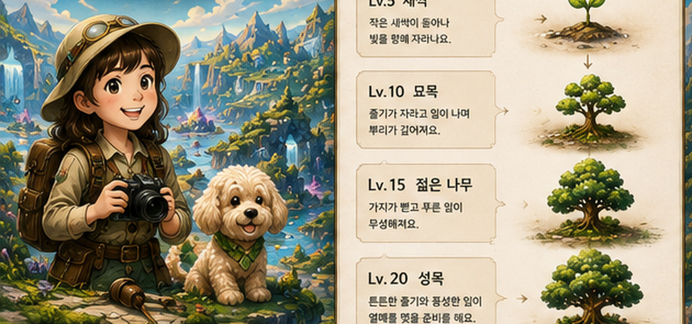
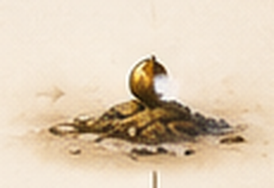

길잡이 모카한 조각씩 찾아보자.

선택한 탐험지
기록
완료한 탐험과 기억이 한 권의 탐험일지처럼 쌓여요.
탐험 진행
보석함
승인된 MASTER GEM ASSET은 원본 연결 전까지 새 디자인으로 대체하지 않아요.
MASTER GEM ASSET기존 승인 원본 연결 대기
성장
Lv.1발아

EXP 0
탐험가의 소원 상점
가족과 주말 영화 보기완성 보석 2개
축복 사용하기
완성 보석 2개를 사용해 이 소원을 확정할까요?
설정
내 캐릭터Character Master 기록 보존
나의 길잡이말티푸 · 모카
질문 읽어주기6세 음성 접근성
움직임 줄이기화면 효과 최소화